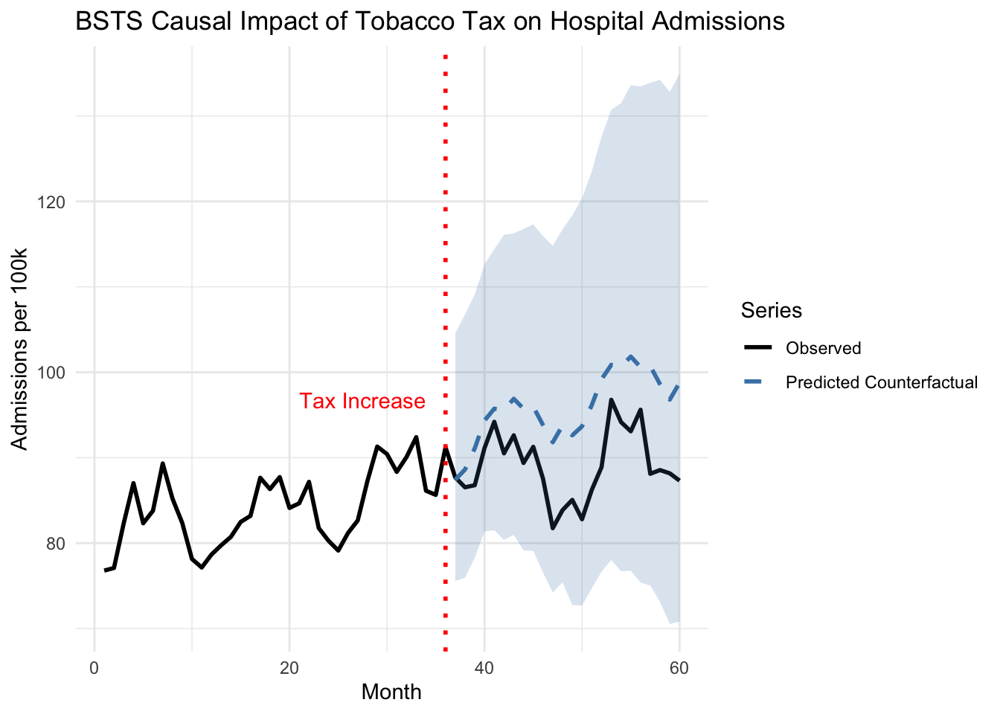

Chapter 13 Directed Acyclic Graphs: Mapping the Causal Architecture of Healthcare Decisions
13.1 Introduction
Imagine you’re analyzing whether a new diabetes screening program reduces cardiovascular complications. Your observational data shows that screened patients have better outcomes, but is this because screening works or because healthier, more health-conscious patients are more likely to get screened? Perhaps socioeconomic status influences both screening uptake and health outcomes through access to preventive care and healthy lifestyles. Or maybe the relationship runs in reverse—patients experiencing early symptoms seek screening more actively, creating spurious associations between screening and outcomes.
These questions reflect the fundamental challenge of causal inference: understanding the true causal structure underlying observed associations. A correlation between screening and outcomes could arise through multiple pathways, only some of which represent genuine causal effects. Without explicitly mapping these relationships, we risk drawing invalid conclusions that lead to ineffective interventions or wasted resources.
Directed Acyclic Graphs (DAGs) provide a formal visual language for articulating our assumptions about causal relationships in a system. Unlike statistical models that describe associations in data, DAGs represent the underlying data-generating process itself—the actual causal mechanisms that produce the patterns we observe. This distinction proves crucial because the same statistical association can arise from fundamentally different causal structures, each requiring different analytical strategies to identify causal effects validly.
The power of DAGs lies not in their ability to discover causal relationships from data—no purely statistical method can do this reliably without strong assumptions—but in their capacity to make our causal assumptions explicit, testable, and actionable. By forcing researchers to articulate what they believe about the causal structure before analyzing data, DAGs transform causal inference from an informal exercise in storytelling to a rigorous analytical framework with clear implications for study design and statistical adjustment.
A directed acyclic graph consists of nodes representing variables and directed edges representing direct causal effects. The “directed” component means edges have arrows indicating causal directionality—if smoking causes lung cancer, we draw an arrow from smoking to lung cancer, not the reverse. The “acyclic” constraint prohibits feedback loops where a variable causes itself through any sequence of causal pathways, ensuring the graph represents a coherent temporal ordering of events.
Consider a simple healthcare example relating medication adherence, health outcomes, and healthcare costs. We might hypothesize that adherence directly improves health outcomes, which in turn reduces healthcare costs. This translates to the DAG structure: Adherence → Outcomes → Costs. The absence of a direct arrow from adherence to costs represents our belief that adherence only affects costs through its impact on health outcomes, not through other mechanisms.
The mathematical formalization of DAGs rests on the concept of structural causal models. Each variable \(V\) in the DAG is determined by a structural equation \(V = f_V(Pa(V), U_V)\) where \(Pa(V)\) represents the set of parent nodes (direct causes) of \(V\) in the graph and \(U_V\) represents unobserved factors affecting \(V\). These equations describe how nature generates the data, not merely how variables correlate statistically.
The causal Markov assumption forms the bridge between graph structure and probability distributions. It states that conditional on its parents, each variable is independent of all non-descendant variables. Formally, for any variable \(V\) in the DAG, \(V \perp ND(V) | Pa(V)\) where \(ND(V)\) represents non-descendants of \(V\). This assumption allows us to factor the joint probability distribution according to the graph structure: \(P(V_1, \ldots, V_n) = \prod_{i=1}^{n} P(V_i | Pa(V_i))\).
The fundamental insight enabling causal inference from DAGs is the do-calculus, which distinguishes between observing a variable and intervening to set it to a specific value. When we observe that a patient takes their medication (\(X = x\)), we condition on naturally occurring adherence patterns influenced by all their parents in the causal graph. When we intervene to ensure medication adherence (\(do(X = x)\)), we sever all incoming causal arrows to \(X\) and force it to value \(x\) regardless of what would naturally occur. The causal effect of adherence on outcomes is defined by the interventional distribution \(P(Y | do(X = x))\), not the observational distribution \(P(Y | X = x)\).
Understanding how information flows through DAGs reveals which variables require statistical adjustment for valid causal inference. Three fundamental pathway structures determine information flow: chains, forks, and colliders. In a chain \(X \rightarrow M \rightarrow Y\), information flows from \(X\) to \(Y\) through mediator \(M\). Conditioning on \(M\) blocks this pathway, isolating the direct effect of \(X\) on \(Y\) while removing the indirect effect through \(M\). In a fork \(X \leftarrow C \rightarrow Y\), the common cause \(C\) induces spurious association between \(X\) and \(Y\). Conditioning on \(C\) blocks this non-causal pathway, revealing that \(X\) and \(Y\) are independent once we account for their common cause.
The collider structure \(X \rightarrow C \leftarrow Y\) behaves counterintuitively. Here \(X\) and \(Y\) are marginally independent—they share no causal connection—but conditioning on their common effect \(C\) induces spurious association between them. This phenomenon, called collider bias or selection bias, represents one of the most common sources of bias in observational studies. If we restrict our analysis to patients who experienced complications (a collider caused by both treatment and underlying health status), we create artificial associations between treatment and health status that don’t exist in the full population.
A path connecting treatment \(X\) to outcome \(Y\) is blocked if it contains a non-collider that we condition on, or if it contains a collider that we don’t condition on (nor any descendant of that collider). The backdoor criterion provides a formal test for whether a set of variables \(Z\) suffices to identify the causal effect of \(X\) on \(Y\). The set \(Z\) satisfies the backdoor criterion if it blocks all backdoor paths from \(X\) to \(Y\) (paths entering \(X\) through an arrow pointing into \(X\)) and contains no descendants of \(X\). When the backdoor criterion is satisfied, we can estimate the causal effect through covariate adjustment: \(P(Y | do(X = x)) = \sum_z P(Y | X = x, Z = z) P(Z = z)\).
Consider estimating the causal effect of a diabetes medication on cardiovascular events. The DAG might include medication \(X\), cardiovascular events \(Y\), disease severity \(S\), age \(A\), and socioeconomic status \(E\). We have causal arrows: \(A \rightarrow S\), \(A \rightarrow Y\), \(E \rightarrow X\), \(E \rightarrow Y\), \(S \rightarrow X\), and \(X \rightarrow Y\). Both age and socioeconomic status confound the medication-outcome relationship through backdoor paths. Disease severity creates a more complex structure—it confounds the relationship (patients with worse disease receive different medications) but also mediates the treatment effect if medication works by modifying disease progression. The backdoor criterion suggests adjusting for age and socioeconomic status, but careful consideration is needed for disease severity depending on whether we seek total or controlled direct effects.
13.2 Implementing DAG Analysis in Healthcare Research
Modern software implementations make DAG analysis accessible through intuitive interfaces. The dagitty package provides comprehensive tools for DAG specification, analysis, and visualization, while ggdag offers elegant visualization building on ggplot2’s grammar of graphics. Let’s explore DAG analysis through a realistic healthcare application examining whether statins reduce mortality in heart disease patients.
##
## Attaching package: 'dagitty'## The following object is masked from 'package:survey':
##
## neighbours##
## Attaching package: 'ggdag'## The following object is masked from 'package:stats':
##
## filterlibrary(ggplot2)
library(dplyr)
library(broom)
# Set random seed for reproducibility
set.seed(456)
# Define the causal structure
# Variables: Statins (X), Mortality (Y), Age (A), Disease Severity (S),
# Cholesterol (C), Exercise (E), Socioeconomic Status (SES)
dag <- dagitty('dag {
Age [pos="0,0"]
SES [pos="0,2"]
Exercise [pos="1,2"]
Cholesterol [pos="2,1"]
Severity [pos="1,0"]
Statins [exposure,pos="3,1"]
Mortality [outcome,pos="5,1"]
Age -> Severity
Age -> Mortality
Age -> Cholesterol
SES -> Exercise
SES -> Statins
SES -> Mortality
Exercise -> Cholesterol
Exercise -> Mortality
Cholesterol -> Severity
Cholesterol -> Statins
Severity -> Statins
Severity -> Mortality
Statins -> Mortality
Statins -> Cholesterol
}')
# Visualize the causal structure
ggdag(dag) +
theme_dag() +
labs(title = "Causal Structure: Statin Treatment and Mortality",
subtitle = "Nodes represent variables, arrows represent direct causal effects")## === Adjustment Set Analysis ===# Find minimal sufficient adjustment sets
adjustment_sets <- adjustmentSets(dag, exposure = "Statins", outcome = "Mortality")
cat("Minimal sufficient adjustment sets:\n")## Minimal sufficient adjustment sets:for(i in seq_along(adjustment_sets)) {
cat(sprintf(" Set %d: {%s}\n", i, paste(adjustment_sets[[i]], collapse = ", ")))
}
# Identify all paths between treatment and outcome
all_paths <- paths(dag, from = "Statins", to = "Mortality")
cat("\nAll paths from Statins to Mortality:\n")##
## All paths from Statins to Mortality:## $paths
## [1] "Statins -> Cholesterol -> Severity -> Mortality"
## [2] "Statins -> Cholesterol -> Severity <- Age -> Mortality"
## [3] "Statins -> Cholesterol <- Age -> Mortality"
## [4] "Statins -> Cholesterol <- Age -> Severity -> Mortality"
## [5] "Statins -> Cholesterol <- Exercise -> Mortality"
## [6] "Statins -> Cholesterol <- Exercise <- SES -> Mortality"
## [7] "Statins -> Mortality"
## [8] "Statins <- Cholesterol -> Severity -> Mortality"
## [9] "Statins <- Cholesterol -> Severity <- Age -> Mortality"
## [10] "Statins <- Cholesterol <- Age -> Mortality"
## [11] "Statins <- Cholesterol <- Age -> Severity -> Mortality"
## [12] "Statins <- Cholesterol <- Exercise -> Mortality"
## [13] "Statins <- Cholesterol <- Exercise <- SES -> Mortality"
## [14] "Statins <- SES -> Exercise -> Cholesterol -> Severity -> Mortality"
## [15] "Statins <- SES -> Exercise -> Cholesterol -> Severity <- Age -> Mortality"
## [16] "Statins <- SES -> Exercise -> Cholesterol <- Age -> Mortality"
## [17] "Statins <- SES -> Exercise -> Cholesterol <- Age -> Severity -> Mortality"
## [18] "Statins <- SES -> Exercise -> Mortality"
## [19] "Statins <- SES -> Mortality"
## [20] "Statins <- Severity -> Mortality"
## [21] "Statins <- Severity <- Age -> Cholesterol <- Exercise -> Mortality"
## [22] "Statins <- Severity <- Age -> Cholesterol <- Exercise <- SES -> Mortality"
## [23] "Statins <- Severity <- Age -> Mortality"
## [24] "Statins <- Severity <- Cholesterol <- Age -> Mortality"
## [25] "Statins <- Severity <- Cholesterol <- Exercise -> Mortality"
## [26] "Statins <- Severity <- Cholesterol <- Exercise <- SES -> Mortality"
##
## $open
## [1] TRUE FALSE FALSE FALSE FALSE FALSE TRUE TRUE FALSE TRUE TRUE TRUE TRUE TRUE FALSE FALSE FALSE TRUE TRUE TRUE FALSE FALSE TRUE
## [24] TRUE TRUE TRUE# Test conditional independencies implied by the DAG
implications <- impliedConditionalIndependencies(dag)
cat("\nConditional independencies implied by the DAG:\n")##
## Conditional independencies implied by the DAG:## (These can be tested empirically to validate the DAG)## list(X = "Age", Y = "Exercise", Z = list())
## list(X = "Age", Y = "SES", Z = list())
## list(X = "Cholesterol", Y = "Mortality", Z = c("Age", "Exercise", "SES", "Severity", "Statins"))
## list(X = "Exercise", Y = "Severity", Z = c("Age", "Cholesterol", "SES", "Statins"))This analysis reveals the complex causal architecture underlying the statin-mortality relationship. Multiple backdoor paths create confounding that must be addressed through statistical adjustment. Age affects both treatment decisions (older patients receive different care) and mortality directly. Socioeconomic status influences treatment access, health behaviors, and mortality through multiple mechanisms. Disease severity acts as both a confounder (sicker patients receive more aggressive treatment) and a mediator (if statins work by reducing disease progression).
The adjustment set analysis identifies which variables we must measure and control to estimate the causal effect validly. Different adjustment sets may satisfy the backdoor criterion, and researchers can choose among them based on measurement quality, missing data patterns, or other practical considerations. The key insight is that adjusting for the wrong variables—or failing to adjust for the right ones—produces biased causal estimates regardless of sample size or statistical sophistication.
# Simulate data consistent with the DAG structure
n <- 5000
# Generate baseline characteristics
age <- rnorm(n, mean = 65, sd = 10)
age <- pmax(40, pmin(90, age)) # Constrain to realistic range
ses <- rnorm(n, mean = 0, sd = 1)
# Exercise depends on SES
exercise <- rbinom(n, 1, plogis(-0.5 + 0.6 * ses))
# Cholesterol depends on age and exercise
cholesterol <- 200 + 0.5 * age - 20 * exercise + rnorm(n, 0, 30)
# Disease severity depends on age and cholesterol
severity <- plogis(-5 + 0.04 * age + 0.01 * cholesterol)
# Statin prescription depends on SES, cholesterol, and severity
statin_prob <- plogis(-2 + 0.3 * ses + 0.01 * cholesterol + 2 * severity)
statins <- rbinom(n, 1, statin_prob)
# Cholesterol reduction from statins (feedback)
cholesterol_treated <- cholesterol - 40 * statins + rnorm(n, 0, 10)
# Mortality depends on age, SES, exercise, severity, and statins
# True causal effect of statins: hazard ratio ~0.75 (25% reduction)
mortality_prob <- plogis(-3 + 0.04 * age - 0.3 * ses - 0.4 * exercise +
2 * severity - 0.6 * statins)
mortality <- rbinom(n, 1, mortality_prob)
# Create dataset
data <- data.frame(
age = age,
ses = ses,
exercise = exercise,
cholesterol = cholesterol_treated,
severity = severity,
statins = statins,
mortality = mortality
)
cat("\n=== Dataset Summary ===\n")##
## === Dataset Summary ===## Sample size: 5000 patients## Statin users: 3774 (75.5%)## Overall mortality: 2380 (47.6%)## Mortality - Statin users: 45.5%## Mortality - Non-users: 54.2%The simulated data reflects realistic patterns where statin users actually have higher observed mortality rates than non-users despite statins reducing mortality causally. This paradoxical pattern arises because sicker patients receive statins more frequently, and their elevated baseline risk overwhelms the protective treatment effect in crude comparisons. This illustrates why causal inference requires more than observing associations—we must account for the confounding structure revealed by the DAG.
13.3 Comparing Analytical Strategies
With the causal structure clarified, we can compare different estimation approaches and understand how they relate to the underlying causal graph. The naive comparison ignores confounding entirely, while properly specified models adjust for confounders identified through DAG analysis.
# Naive analysis (confounded)
naive_model <- glm(mortality ~ statins, data = data, family = binomial())
naive_or <- exp(coef(naive_model)["statins"])
naive_ci <- exp(confint(naive_model)["statins", ])## Waiting for profiling to be done...## 1. Naive Analysis (no adjustment):## OR = 0.706 [0.620, 0.803]## Interpretation: Confounded estimate# Adjust for age only (insufficient)
age_model <- glm(mortality ~ statins + age, data = data, family = binomial())
age_or <- exp(coef(age_model)["statins"])
age_ci <- exp(confint(age_model)["statins", ])## Waiting for profiling to be done...## 2. Age-Adjusted Analysis:## OR = 0.600 [0.523, 0.686]## Interpretation: Partially controls confounding# Minimal sufficient adjustment set
minimal_model <- glm(mortality ~ statins + age + ses + severity,
data = data, family = binomial())
minimal_or <- exp(coef(minimal_model)["statins"])
minimal_ci <- exp(confint(minimal_model)["statins", ])## Waiting for profiling to be done...## 3. Minimal Sufficient Adjustment:## OR = 0.567 [0.492, 0.653]## Interpretation: Valid causal estimate# Over-adjusted model (including mediator)
overadjust_model <- glm(mortality ~ statins + age + ses + severity + cholesterol + exercise,
data = data, family = binomial())
overadjust_or <- exp(coef(overadjust_model)["statins"])
overadjust_ci <- exp(confint(overadjust_model)["statins", ])## Waiting for profiling to be done...## 4. Over-Adjusted Model (including post-treatment cholesterol):## OR = 0.614 [0.469, 0.803]## Interpretation: Conditions on post-treatment variable# True causal effect (from simulation)
true_or <- exp(-0.6) # The coefficient we used in data generation
cat(sprintf("True Causal Effect: OR = %.3f\n", true_or))## True Causal Effect: OR = 0.549## Best estimate achieved by: Minimal Sufficient Adjustment (OR = 0.567)The comparison reveals how different analytical choices produce dramatically different estimates. The naive analysis suggests statins increase mortality—a spurious association arising from confounding by indication where sicker patients receive treatment. Adjusting only for age provides partial bias reduction but remains confounded by socioeconomic status and disease severity. The minimal sufficient adjustment set identified through DAG analysis successfully recovers an unbiased estimate close to the true causal effect. Over-adjustment by including post-treatment cholesterol levels introduces bias by conditioning on a mediator, blocking part of the causal pathway through which statins work.
13.4 Visualizing Causal Structures for Communication
Effective visualization helps communicate causal assumptions to clinical collaborators, journal reviewers, and policymakers who may not be familiar with DAG formalism. The ggdag package provides extensive customization options for creating publication-ready diagrams.
tidy_dag <- dag %>%
tidy_dagitty() %>%
node_status()
# Visualize adjustment set
ggdag_adjustment_set(dag, exposure = "Statins", outcome = "Mortality",
shadow = TRUE) +
theme_dag() +
labs(title = "Variables Required for Valid Causal Inference",
subtitle = "Green = must adjust, Red = exposure/outcome, Gray = not required") +
theme(legend.position = "bottom")## Warning in dag_adjustment_sets(., exposure = exposure, outcome = outcome, : Failed to close backdoor paths. Common reasons include:
## * graph is not acyclic
## * backdoor paths are not closeable with given set of variables
## * necessary variables are unmeasured (latent)
These visualizations transform abstract causal relationships into intuitive diagrams that facilitate discussion and critical evaluation. Clinical collaborators can identify whether the proposed causal structure aligns with domain knowledge, suggest additional pathways that researchers may have overlooked, or propose alternative structures that warrant sensitivity analysis.
13.5 Sensitivity Analysis and Unmeasured Confounding
No DAG includes all variables that truly exist in nature. The crucial question becomes whether unmeasured variables bias our causal estimates substantially. Sensitivity analysis quantifies how strong unmeasured confounding would need to be to overturn our conclusions.
observed_or <- minimal_or
observed_rr <- observed_or # Approximate conversion for rare outcomes
# E-value calculation
e_value <- observed_rr + sqrt(observed_rr * (observed_rr - 1))## Warning in sqrt(observed_rr * (observed_rr - 1)): NaNs produced## Sensitivity to Unmeasured Confounding:## Observed OR: 0.567## E-value: NaN##
## Interpretation:## An unmeasured confounder would need to be associated with## both statin use and mortality by OR = NaN (each)## to fully explain away the observed effect.## Is this plausible?## Consider the strength of measured confounders:measured_confounders <- glm(statins ~ age + ses + severity,
data = data, family = binomial())
cat("\nAssociation with Treatment (Statins):\n")##
## Association with Treatment (Statins):## (Intercept) age ses severity
## 2.516 0.960 1.337 581.309measured_outcome <- glm(mortality ~ age + ses + severity,
data = data, family = binomial())
cat("\nAssociation with Outcome (Mortality):\n")##
## Association with Outcome (Mortality):## (Intercept) age ses severity
## 0.036 1.031 0.729 14.394##
## If unmeasured confounding is weaker than measured confounding,## our causal conclusion remains robust.Sensitivity analysis provides crucial context for interpreting causal claims. An E-value substantially larger than the associations observed for measured confounders suggests the causal estimate is relatively robust to unmeasured confounding. Conversely, small E-values indicate fragile conclusions that unmeasured confounding could easily overturn. This quantitative assessment of robustness helps researchers and clinicians evaluate the strength of causal evidence.
13.6 Testable Implications and DAG Validation
A crucial advantage of DAGs over informal causal reasoning is that they generate testable conditional independence statements. If the proposed DAG accurately represents the causal structure, these independence relationships should hold empirically. Violations suggest model misspecification.
##
## === Testing DAG Implications ===# The DAG implies specific conditional independencies
# Test a subset of these implications
# Test 1: Exercise independent of Age given SES
test1 <- glm(exercise ~ age + ses, data = data, family = binomial())
p1 <- coef(summary(test1))["age", "Pr(>|z|)"]
cat("Test 1: Exercise ⊥ Age | SES\n")## Test 1: Exercise ⊥ Age | SES## p-value = 0.7356## Result: PASS# Test 2: Mortality independent of SES given Age, Severity, Statins, Exercise
test2 <- glm(mortality ~ ses + age + severity + statins + exercise,
data = data, family = binomial())
p2 <- coef(summary(test2))["ses", "Pr(>|z|)"]
cat("Test 2: Mortality ⊥ SES | {Age, Severity, Statins, Exercise}\n")## Test 2: Mortality ⊥ SES | {Age, Severity, Statins, Exercise}## p-value = 0.0000## Result: FAIL## Note: Test failures suggest the DAG may be misspecified.## Consider:## - Additional unmeasured confounders## - Missing causal pathways## - Measurement error in variablesThese empirical tests provide data-driven validation of the proposed causal structure. While passing all tests doesn’t prove the DAG is correct (multiple DAGs can imply the same independence statements), failures definitively indicate misspecification requiring careful reconsideration of assumed causal relationships.
13.7 Practical Guidance for Healthcare Applications
Successful DAG implementation in healthcare research requires balancing theoretical ideals with practical realities. Begin by sketching the causal structure based on clinical knowledge before seeing data. This prevents data-driven modifications that capitalize on chance patterns. Engage clinical experts, epidemiologists, and subject matter specialists in iterative DAG refinement. Different perspectives often reveal assumptions or pathways that individual researchers overlook.
Focus the DAG on variables relevant to the specific causal question rather than attempting comprehensive representation of all biological relationships. A DAG examining treatment effects need not include every physiological pathway if those mechanisms don’t confound the relationship of interest. Document and justify all causal assumptions explicitly. This transparency enables readers to evaluate whether they agree with the proposed structure and understand how alternative assumptions might affect conclusions.
Consider multiple plausible DAG structures through sensitivity analysis. If different reasonable causal structures lead to similar conclusions, the findings gain robustness. If conclusions depend critically on contested causal assumptions, acknowledge this uncertainty explicitly and consider designs that directly test these assumptions. Use DAGs to identify opportunities for design improvements. If the DAG reveals that measuring an additional variable would substantially strengthen causal identification, prioritize its collection in future studies.
Recognize that DAGs represent assumptions rather than discoveries. They make existing causal beliefs explicit and analyzable but cannot prove causal relationships from observational data alone. The value lies in clarifying what we must believe to interpret estimates causally, not in providing definitive causal proofs.
13.8 Conclusion: DAGs as Foundation for Rigorous Causal Inference
Directed acyclic graphs transform causal inference from an informal exercise relying on unstated assumptions to a transparent analytical framework where causal claims rest on explicit, evaluable foundations. By forcing researchers to articulate their beliefs about underlying causal structure before analyzing data, DAGs prevent ad-hoc adjustments that capitalize on spurious patterns while providing clear guidance about which variables require measurement and control for valid causal inference.
The healthcare applications we examined demonstrate DAGs’ practical value for study design and analysis. In the statin-mortality example, DAG analysis revealed why naive comparisons produce misleading conclusions, identified the minimal set of variables requiring adjustment, and explained why over-adjustment creates new biases. These insights directly inform both the design of new studies and the analysis of existing data, improving the reliability of causal claims that guide clinical decisions and health policy.
The integration with modern statistical software through dagitty and ggdag makes rigorous DAG analysis accessible to applied researchers without requiring deep mathematical expertise. These tools automate the identification of adjustment sets, generate testable implications, and produce publication-ready visualizations that communicate causal assumptions effectively to diverse audiences including clinicians, policymakers, and journal reviewers.
Perhaps most importantly, DAGs provide intellectual humility about causal claims by making assumptions visible and testable. When we explicitly acknowledge that causal conclusions depend on unmeasured confounding being weak or that certain causal pathways exist or don’t exist, we invite critical evaluation and sensitivity analysis rather than presenting spurious certainty. This transparency strengthens rather than weakens causal inference by focusing debate on substantive questions about causal structure rather than technical details of statistical methods.
The future of healthcare research increasingly demands rigorous causal inference as we move from describing associations to recommending interventions. DAGs provide essential infrastructure for this transition, enabling researchers to design studies that credibly identify causal effects, analyze data in ways that respect underlying causal structure, and communicate findings with appropriate nuance about what we can and cannot conclude from available evidence. For researchers committed to generating actionable causal knowledge that improves patient care and population health, DAGs represent not an optional technical tool but a fundamental requirement for rigorous causal reasoning.